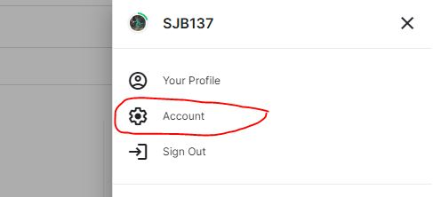
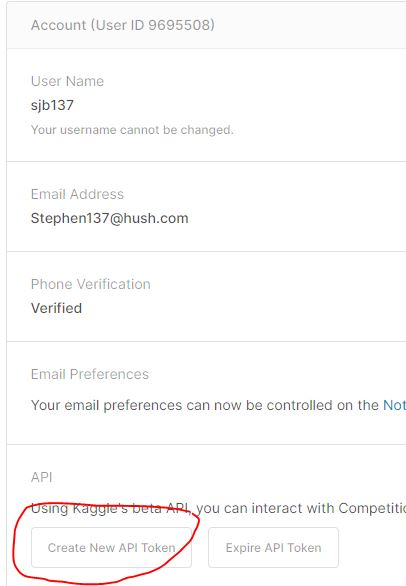
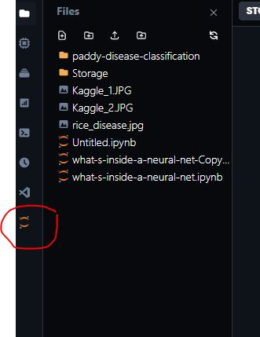
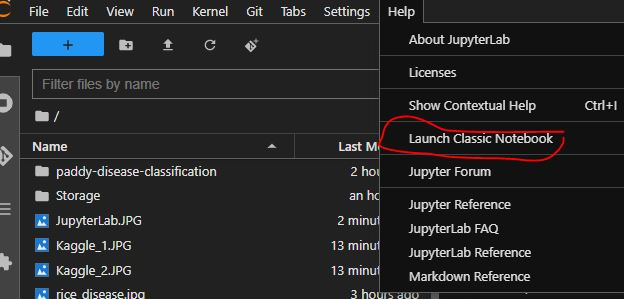
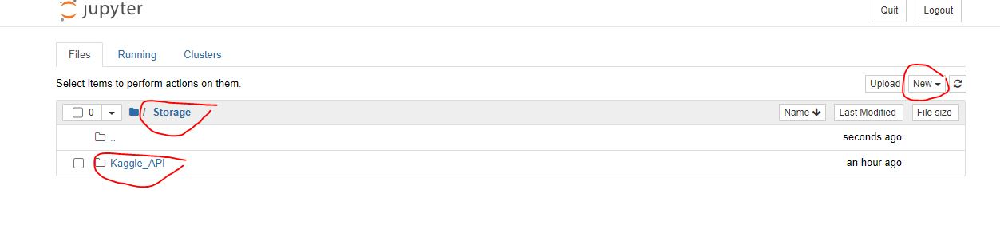
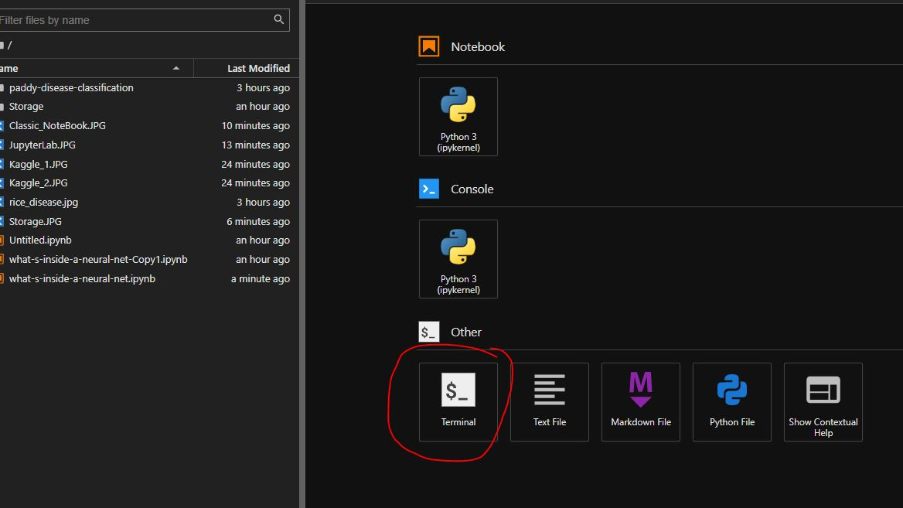
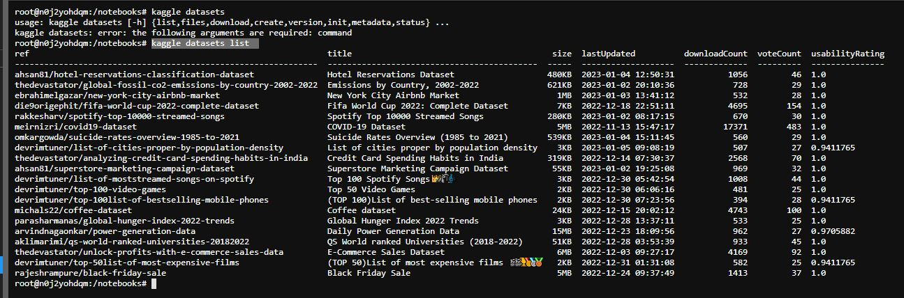

Kaggle API
In order to download datasets from Kaggle when working outwith the Kaggle environment you will need to make use of a Kaggle API. You can get this by clicking on Account below your profile name, and then selecting Create New API Token


Initially the file will be saved in your local environment - in a directory named .kaggle. We need to move this file into a .kaggle directory within your PaperSpace environment. I found this easiest to do by:
- Open in JupyterLab

- Launch Classic NoteBook

- Create a storage directory to store Kaggle API within PaperSpace - and add the Kaggle API json file from your local environment

- Move the json file into a .kaggle directory within Paperspace. You can enter the following commands within the Terminal:
mv kaggle.json ~/.kaggle
The .kaggle directory should already exist but if not you can create one by typing following command within the Terminal:
mkdir ~/.kaggle

- To prevent other users from using our API token, we can type the following command in the Terminal:
chmod 600 /root/.kaggle/kaggle.json
OK. That’s us now all set up and ready to access Kaggle datsets. If you are looking for a specific dataset, you can now type the following command within the Terminal:
kaggle datasets list

As you can see, there’s plenty to keep us occupied!! If you wanted to download data from this API, just enter the command in the Terminal, following the format below :
kaggle datasets download
[ref]
For example if we wanted the (TOP 50)List if most expensive films dataset we would type:
kaggle datasets download devrimtuner/top-50list-of-most-expensive-films